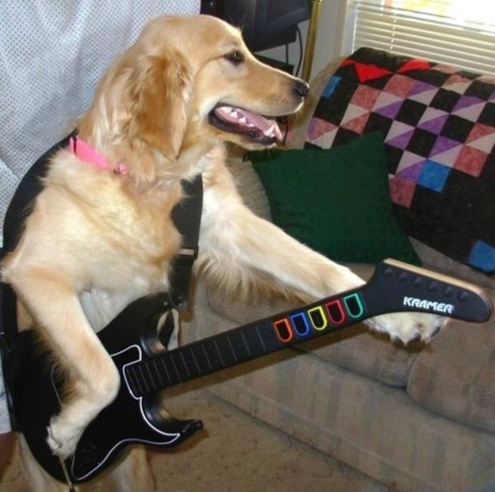
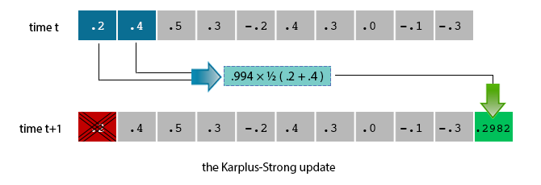
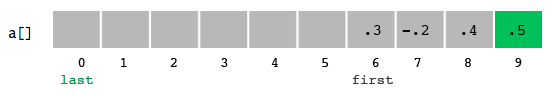
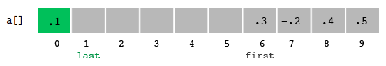

Goals
- Learn how to create user-defined data types in Java
- Learn about digital audio
Rock out!

Background
For this assignment, you will write a program to simulate plucking a guitar string using the Karplus-Strong algorithm. This algorithm played a seminal role in the emergence of physically modeled sound synthesis (in which a physical description of a musical instrument is used to synthesize sound electronically).
When a guitar string is plucked, the string vibrates and creates sound. The length of the string determines its fundamental frequency of vibration. We model a guitar string by sampling its displacement (a real number between -1/2 and +1/2) at N equally spaced points (in time), where N equals the sampling rate (44,100) divided by the fundamental frequency (rounding the quotient up to the nearest integer).

- The resulting vibrations.
After the string is plucked, the string vibrates.
The pluck causes a displacement which spreads wave-like over time.
The Karplus-Strong algorithm simulates this vibration by maintaining
a ring buffer of the N samples: the algorithm
repeatedly deletes the first sample from the buffer
and adds to the end of the buffer the average of the first two samples,
scaled by an energy decay factor of 0.994.

Plucking the string.
The excitation of the string can contain energy at any frequency. We simulate the excitation with white noise: set each of the N displacements to a random real number between -1/2 and +1/2.

Why it works? The two primary components that make the Karplus-Strong algorithm work are the ring buffer feedback mechanism and the averaging operation.
- The ring buffer feedback mechanism. The ring buffer models the medium (a string tied down at both ends) in which the energy travels back and forth. The length of the ring buffer determines the fundamental frequency of the resulting sound. Sonically, the feedback mechanism reinforces only the fundamental frequency and its harmonics (frequencies at integer multiples of the fundamental). The energy decay factor (.994 in this case) models the slight dissipation in energy as the wave makes a roundtrip through the string.
- The averaging operation. The averaging operation serves as a gentle low-pass filter (which removes higher frequencies while allowing lower frequencies to pass, hence the name). Because it is in the path of the feedback, this has the effect of gradually attenuating the higher harmonics while keeping the lower ones, which corresponds closely with how a plucked guitar string sounds.
Some intuition.
A more intuitive, but somewhat less precise explanation of the alogirhtm is the following. When you pluck a guitar string, the middle of the string bounces up and down wildly. Over time, the tension on the string causes the string to move more regularly and more gently until it finally comes to rest. High frequency strings have greater tension, which causes them to vibrate faster, but also to come to rest more quickly. Low frequency strings are looser, and vibrate longer. If you think about the values in the ring buffer as positions over time of a point in the middle of a string, filling the buffer with random values is equivalent to the string bouncing wildly (the pluck). Averaging neighboring samples brings them closer together, which means the changes between neighboring samples becoming smaller and more regular. The decay factor reduces the overall amount the point moves, so that it eventually comes to rest. The final kicker is the ring buffer length. Low notes have lower frequencies, and hence longer ring buffers (44,100 / N is bigger if N is smaller). That means it you will have to go through more random samples before getting to the first round of averaged samples, and so on. The result is it will take more steps for the values in the buffer to become regular and to die out, modeling the longer reverberation time of a low string.
Getting started
Download the templates for RingBuffer.java and GuitarString.java to get you started.
Make sure you have GuitarHeroLite.java, StdAudio.java, and StdDraw.java, along with this assignment's readme_guitar.txt template.
- Review the material in the textbook on digital audio (pp. 147–151, 202–206).
- Please note that we will NOT be using the Processing library in this assignment.
Part I: Ringbuffer
public class RingBuffer
-----------------------------------------------------------------------------------------
RingBuffer(int capacity) // create an empty ring buffer, with given max capacity
int size() // return number of items currently in the buffer
boolean isEmpty() // is the buffer empty (size equals zero)?
boolean isFull() // is the buffer full (size equals capacity)?
void enqueue(double x) // add item x to the end
double dequeue() // delete and return item from the front
double peek() // return (but do not delete) item from the front
- The design of your program should look like the provided RingBuffer.java, except that you will need to fill in all of the constructors and methods.
public class RingBuffer {
private double[] rb; // items in the bufer
private int first; // rb[first] = first item in the buffer
private int last; // rb[last-1] = last item in the buffer
private int size; // current number of items in the buffer
}
Cyclic Wrap-Around
Cyclic Wrap-Around
Initial State:

enqueue(0.5)
enqueue(0.1)

dequeue()

Implement RingBuffer to throw an exception if the client attempts to dequeue() from an empty buffer or enqueue() into a full buffer. This will cause your program to crash and print a stack trace that will help you identify the bug. (We have included these statements in the skeleton code for you.) The following is an example of how to throw an exception:
if (isEmpty()) throw new RuntimeException("The ring buffer is empty.");
See Vector.java for some other examples and p. 446 in the book for a slighty expanded explanation of exceptions..
Test
% java RingBuffer 10 Size after wrap-around is 10 55.0 % java RingBuffer 100 Size after wrap-around is 100 5050.0
Part II: GuitarString
Next, create a data type to model a vibrating guitar string. Write a class named GuitarString that implements the following API:
public class GuitarString
------------------------------------------------------------------------------------------------------------------------
GuitarString(double frequency) // create a guitar string of the given frequency, using a sampling rate of 44,100
GuitarString(double[] init) // create a guitar string whose size and initial values are given by the array
void pluck() // set the buffer to white noise
void tic() // advance the simulation one time step
double sample() // return the current sample
int time() // return number of tics
Constructors.
There are two ways to create a GuitarString object.
- The first constructor creates a RingBuffer of the
desired capacity N (
sampling rate 44,100 divided by frequency, rounded up to the nearest integer), and initializes it to represent a guitar string at rest by enqueueing N zeros. - The second constructor creates a RingBuffer of capacity equal to the size of the array, and initializes the contents of the buffer to the values in the array. On this assignment, its main purpose is for debugging and grading.
Pluck.
Tic.
Sample.
Time.
Are you getting a NullPointerException?
Test
% java GuitarString 25
0 0.2000
1 0.4000
2 0.5000
3 0.3000
4 -0.2000
5 0.4000
6 0.3000
7 0.0000
8 -0.1000
9 -0.3000
10 0.2982
11 0.4473
12 0.3976
13 0.0497
14 0.0994
15 0.3479
16 0.1491
17 -0.0497
18 -0.1988
19 -0.0009
20 0.3705
21 0.4199
22 0.2223
23 0.0741
24 0.2223
Interactive guitar player.
GuitarHeroLite.java is a sample GuitarString client that plays the guitar in real-time, using the keyboard to input notes. When the user types the lowercase letter 'a' or 'c', the program plucks the corresponding string. Since the combined result of several sound waves is the superposition of the individual sound waves, we play the sum of all string samples. After you've completed RingBuffer and GuitarString, run GuitarHeroLite in order to check to see if everything works properly. You should hear two different pitches corresponding to A and C everytime you press the key.
public class GuitarHeroLite { public static void main(String[] args) { // create two guitar strings, for concert A and C double CONCERT_A = 440.0; double CONCERT_C = CONCERT_A * Math.pow(2, 3.0/12.0); GuitarString stringA = new GuitarString(CONCERT_A); GuitarString stringC = new GuitarString(CONCERT_C); while (true) { // check if the user has typed a key; if so, process it if (StdDraw.hasNextKeyTyped()) { char key = StdDraw.nextKeyTyped(); if (key == 'a') { stringA.pluck(); } else if (key == 'c') { stringC.pluck(); } } // compute the superposition of samples double sample = stringA.sample() + stringC.sample(); // play the sample on standard audio StdAudio.play(sample); // advance the simulation of each guitar string by one step stringA.tic(); stringC.tic(); } } }
- Note: In order to enter keystrokes in GuitarHeroLite, make sure to first click on the standard draw window before typing the keystrokes. If you are having trouble running GuitarHeroLite, refer to the Frequently Asked Questions below.
- Also, note how this code above uses an infinite loop to continually receive keystrokes from the user and generate new music samples. This infinite loop ends when the program terminates.
Part III: GuitarHero
Write a program GuitarHero that is similar to GuitarHeroLite, but supports a total of 37 notes on the chromatic scale from 110Hz to 880Hz. In general, make the i'th character of the string below play the i'th note.
String keyboard = "q2we4r5ty7u8i9op-[=zxdcfvgbnjmk,.;/' ";
- Note: i is 0 indexed. For example, i=2 refers to w. The ith character of the string corresponds to a frequency of 440 × 2(i - 24) / 12, so that the character 'q' is 110Hz, 'i' is 220Hz, 'v' is 440Hz, and ' ' is 880Hz.

- Don't even think of including 37 individual GuitarString variables or a 37-way if statement! Instead, create an array of 37 GuitarString objects and use keyboard.indexOf(key) to figure out which key was typed.
- Make sure your program does not crash if a key is played that is not one of your 37 notes.
nn//SS/ ..,,mmn //..,,m //..,,m nn//SS/ ..,,mmn (S = space)
w q q
8 u 7 y o p p
i p z v b z p b n z p n d [ i d z p i p z p i u i i
And now you're a guitar hero!
Frequently Asked Questions
Does your constructor correctly initialize all of the instance variables? Did you allocate memory for your array? Did you inadvertently redeclare an instance variable in a method or constructor, thereby shadowing the instance variable with the same name?
Rounding up to the nearest int is the same as taking the ceiling; Java provides Math.ceil() for this purpose.
The value is clipped—it is replaced by the value 1.0 or -1.0, respectively.
Did you forget to initialize the ring buffer to contain N zeros in your GuitarString constructor?
Make sure you have tested with the main() provided for GuitarString. If that works, it is likely something wrong with pluck() since the main() provided for GuitarString does not test that method. To diagnose the problem, print out the values of sample() and check that they become nonzero after you type lower case characters 'a' and 'c'.
It's likely that pluck() is working, but tic() is not. The best test is to run the main() provided for GuitarString.
If keyboard is a String and key is a character, then keyboard.indexOf(key) return the integer index of the first occurrence of the character key in the string keyboard (or -1 if it does not occur).
No, in general, we will deduct if you use an unnamed constant (such as 37) in your program more than once. We recommend using the name SAMPLING_RATE for 44,100 and CONCERT_A for 440. But you need not name all of the constants in the formula 2(i - 24) / 12..
Yes, we will be testing the methods in the API directly. If your method has a different signature or does not behave as specified, you will lose a substantial number of points. You may not add public methods or instance variables to the API; however, you may add private methods (which are only accessible in the class in which they are declared). You may also add private instance variables for data that must be shared between methods.
Extra credit 1.
Write a program GuitarHeroVisualizer.java (by modifying GuitarHero.java) that plots the sound wave in real-time, as the user is playing the keyboard guitar. The output should look something like this, but change over time.
You should not redraw the wave on every sample. Instead, draw the wave of the last n samples every n timesteps for an appropriate value of n. Experiment with different values of n to find one that you think looks good and draws smoothly. There is more than one way to handle the drawing — there is not a "right" way to do this. You may also do a different visualization, as long as it is tied to the audio samples.
Since the Processing library's draw loop cannot run faster than a few hundred times per second, we must use our own while loop to generate the sound samples, as you did in the main part of the assignment. Consequently, we can't use the Processing library for the visualization in this extra credit, and instead must rely on the textbook's StdDraw library.
Therefore, you should use the StdDraw library to complete this extra credit. The textbook contains many examples of how to use it, and the concept of how to use it is not all that different from how we use the Processing library.
Extra credit 2.
Bring your laptop to recitation and perform a piece for your classmates.
Remember, it's only embarassing if you think it is! :)
Challenge for the bored.
Modify the Karplus-Strong algorithm to synthesize a different instrument. Consider changing the excitation of the string (from white-noise to something more structured) or changing the averaging formula (from the average of the first two samples to a more complicated rule) or anything else you might imagine. This is a challenge for the bored, so you will not receive extra credit for it. But you may use it as the basis for you visualizer and/or your performance in class.
Alexander Strong suggests a few simple variants you can try:
- Stretched tuning: The frequency formula in the assignment uses "perfect tuning" the doesn't sound equally good in every key. Instead, most musicians use stretched tuning that equalizes the distortions across all keys. To get stretched tuning, using the formula f = 440 × 1.05956i - 24. Try experimenting a bit with the base of the exponent to see what sounds best.
- Extra notes: Add additional keys to your keyboard string to play additional notes (higher or lower). Higher notes especially will benefit from stretched tuning. You will need to update the 24 in your frequency formula to change the frequency of the lowest note.
- Better decay factors: Make the decay factor dependent on the string frequency. Lower notes should have a higher decay factor; higher notes should have a smaller decay. Try different formulas and see what sounds best.
- Harp strings: Flipping the sign of the new value before enqueing it in tick() will change the sound from guitar-like to harp-like. You may want to play with the decay factors and note frequencies to improve the realism.
- Drums: Randomly flipping (with probability 0.5) the sign of the new value before enqueing it in tick() will produce a drum sound. You will need lower frequencies for the drums than for the guitar and harp, and will want to use a decay factor of 1.0 (no decay). The note frequencies for the drums should also be spaced further apart.
- Mix and match: Assign some keyboard keys to drums, others to guitar, and still others to harp (or any other instruments you invent) so you can play an ensemble.
Enrichment.
- ChucK as specialized programming language for real-time synthesis, composition, and performance originated by Ge Wang and Perry Cook at Princeton University. Here's the Karplus-Strong algorithm in ChucK.
- Here's a description of a physically modeled slide flute by Perry Cook.
ChucK
Slide flute.
Submission
Submit RingBuffer.java, GuitarString.java, GuitarHero.java, and a completed readme_guitar.txt using the submission link on the left. Optional: Submit a fully functional GuitarHeroVisualizer.java for extra credit (described below). If Your GuitarHeroVisualizer requires any additional files, you may submit them in a zip file named extra.zip.
/